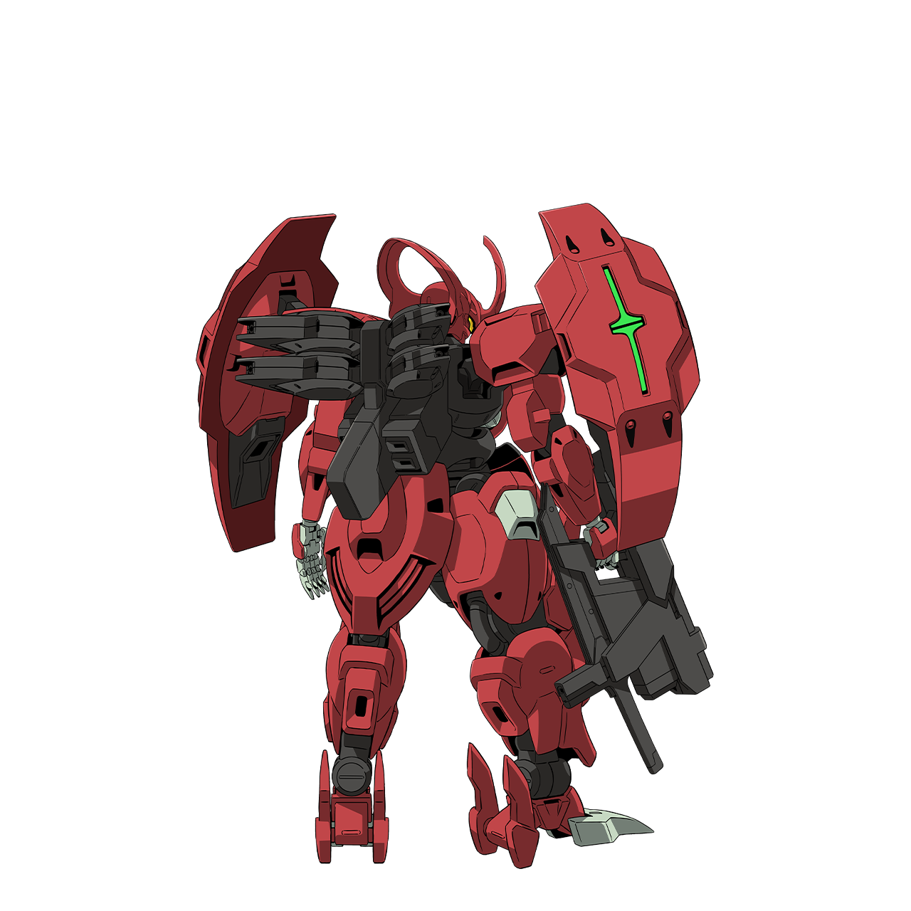

A second-year student in the piloting department, who transferred to the school from Mercury. Suletta
is timid and somewhat lacks communication skills.
She is the pilot of the Gundam Aerial developed on Mercury.
A mobile suit that Suletta Mercury brings with her to school. It is equipped with a shield made up of
GUND-BITs, a next-generation remote-controlled swarm weapon system.
Model Number: XVX-016
Head Height: 18.0m
Weight: 43.9t
Miorine Rembran
About
An attractive and academically distinguished second-year student in the management strategy
department. Miorine is the only daughter of Delling Rembran, the president of the Benerit Group and
chairman of the school's board.
She has a strong rebellious feeling towards her father.
Guel Jeturk
Affiliation
Jeturk House
Mobile suit
DARILBALDE
About
An heir to Jeturk Heavy Machinery, one of the group's three branches, and a third-year student in the
piloting department. Guel has a rough temperament and is quick to anger. As the ace pilot of Jeturk
House, he has absolute confidence in his own skills.

A fifth-generation demonstration machine made by the Jeturk company. It carries a new type of drone
weapon which can operate autonomously thanks to its Decision Making Extension AI.
Model Number: MD-0064
Head Height: 18.7m
Weight: 72.8t
Elan Ceres
Affiliation
Peil House
Mobile suit
GUNDAM PHARACT
About
The top pilot backed by Peil Technologies, one of the group's three branches. A third-year student in
the piloting department. Elan is a taciturn and solitary person, who doesn't open his heart to
anyone in school. He has an interest to Suletta
A GUND-ARM developed by the Peil company. Thanks to the use of Blast Boosters and the higher-order
inertial control provided by the GUND Format, its flight performance is drastically improved.
Model Number: FP/A-77
Head Height: 19.1m
Weight: 57.1t